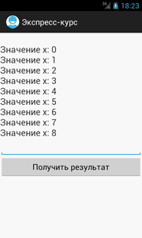
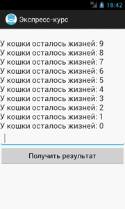

/* Моя кошка замечательно разбирается в программировании. Стоит мне объяснить проблему ей - и все становится ясно. */
John Robbins, Debugging Applications, Microsoft Press, 2000

/* Моя кошка замечательно разбирается в программировании. Стоит мне объяснить проблему ей - и все становится ясно. */
John Robbins, Debugging Applications, Microsoft Press, 2000
Конструкция for управляет циклами. Команда выполняется до тех пор, пока управляющее логическое выражение не станет ложным.
Блок-схема.

Цикл for является наиболее распространённым циклом в программировании, поэтому его следует изучить. Цикл for проводит инициализацию перед первым шагом цикла. Затем выполняется проверка условия цикла, и в конце каждой итерации происходит изменение управляющей переменной. Выглядит следующим образом:
for(инициализация; логическое выражение; шаг)
команда
Любое из трёх выражений цикла (инициализация, логическое выражение или шаг) можно пропустить. Перед выполнением каждого шага цикла проверяется условие цикла. Если условие окажется ложным, то выполнение продолжится с инструкции, следующей за конструкцией for.
Помните, что выражение инициализации выполняется один раз, затем вычисляется условие, которое должно быть булевым выражением.
Как правило, цикл for используют для перебора. В качестве имени первой переменной часто используют i (сокр. от init), но вы можете использовать любое имя.
Простейший пример:
for (int x = 0; x < 9; x = x + 1)
textViewInfo.append("\nЗначение x: " + x);

В этом примере переменной x присваивается начальное значение, равное нулю. Затем выполняется проверка условия в логическом выражении (x < 9), если результат проверки истинен, то выполняется оператор после выражения цикла. После чего процесс повторяется. Процесс продолжается до тех пор, пока результат проверки условия не станет ложным.
Третье выражение в цикле - шаг, то есть, на какое значение нужно изменить переменную. Строго говоря, в таком виде (x = x + 1) современные программисты не пишут, так как есть укороченная форма записи (x++). Поэтому, предыдущий пример можно переписать так:
for (int x = 0; x < 9; x++)
Увеличение значения переменной на единицу - весьма распространённый случай. Но это не является обязательным условием цикла, вы можете установить шаг и с помощью умножения, вычитания и других действий. Например, мы хотим вывести процесс уменьшения жизней у очень любопытной кошки:

Если нужно выполнить несколько операторов в цикле, то используют фигурные скобки.
for (int kitten = 1; kitten < 10; kitten++) {
textViewInfo.append("\nСчитаем котят: " + kitten);
editResult.setText("Ура! Нас подсчитали");
}
В этом примере выполняется цикл с выводом числа подсчитанных котят, а также выводится текст в текстовом поле. Кстати, это один из примеров неправильного кода, когда в текстовом поле девять раз подряд выводится одна и таже строка. Мы этого не замечаем, но в реальности процессор выполняет лишнюю работу и второй оператор безусловно нужно вынести за пределы блока кода, который относится к циклу. Подобные ошибки очень часто встречаются у начинающих программистов, которые забывают, как работает цикл.
Когда мы объявляем переменную в первой части оператора for(int i = 0; ...), то область видимости переменной ограничена телом цикла и эта переменная не доступна на другом участке кода. Это подходящий вариант, если переменная больше нигде не используется. При этом переменная имеет область видимости и продолжительность существования, совпадающие с видимостью и продолжительностью жизни самого цикла. Вне цикла переменная прекратит своё существование.
Если управляющую переменную цикла нужно использовать в других частях приложения, то её не следует объявлять внутри цикла.
int i; // эта переменная нам понадобится не только в цикле
for(i = 0; i < 10; i++){
// что-то делаем
}
// можем использовать переменную где-то ещё
x = i +10;
С другой стороны, если видимость переменной ограничена в пределах цикла, то не будет никакого конфликта, если вы будете использовать одинаковые имена переменных в разных циклах for, так как они не будут друг другу мешать.
Иногда требуется указать несколько переменных в инициализационной части цикла. Для начала посмотрим на стандартный пример:
int a, b;
b = 4;
for(a = 1: a < b; a++) {
textViewInfo.append("a = " + a + "\n");
textViewInfo.append("b = " + b + "\n");
b--;
}
В данном цикле используются две переменные. Можно включить обе переменные в оператор for, чтобы не выполнять обработку второй переменной вручную:
int a, b;
for(a = 1, b = 4; a < b; a++, b--) {
textViewInfo.append("a = " + a + "\n");
textViewInfo.append("b = " + b + "\n");
}
Как видно из кода, запятая служит разделителем для двух переменных. Теперь оба разделённых запятой оператора в итерационной части цикла выполняются при каждом выполнении цикла. Данный код считается более эффективным, хотя на практике встречается редко.
Части цикла могут быть пустыми. Например, в следующем примере нет инициализационного и итерационного выражения:
int i;
boolean kind = false;
i = 0;
for( ; !kind; ) {
textViewInfo.append("i равно " + i + "\n");
if(i == 10) done = true;
i++;
}
А можно вообще все три части оператора оставить пустыми:
for( ; ;) {
//...
}
В этом случае создаётся бесконечный цикл, который никогда не завершится. Практического смысла данный код не имеет.
Во многих языках существует более компактная форма for для перебора элементов массивов - foreach. Конструкция foreach не требует ручного изменения переменной-шага для перебора - цикл автоматически выполняет эту работу.
В Java решили не добавлять новое ключевое слово, а просто сделали усовершенствованный вид цикла for, который имеет вид:
for(тип итер_пер : коллекция) блок_операторов
Для сравнения напишем цикл для вычисления суммы значений элементов массива традиционным способом:
int[] nums = { 1, 2, 3, 4, 5 };
int sum = 0;
for(int i = 0; i < 5; i++) sum += nums[i];
Этот код можно переписать следующим образом:
int[] nums = { 1, 2, 3, 4, 5 };
int sum = 0;
for(int i : nums) sum += i;
При прохождении цикла переменной i автоматически присваивается значение, равное значению следующего элемента массива nums. Таким образом, при первом прохождении переменная i содержит значение 1, при втором - 2 и т.д. Кроме того при таком способе исключается возможность ошибок выхода за пределы массива.
Для этого способа можно использовать массив или любой класс с интерфейсом Iterable.
Можно прервать выполнение цикла с помощью оператора break:
int[] nums = { 1, 2, 3, 4, 5 };
int sum = 0;
for(int i : nums) {
sum += i;
if(i == 3) break; // останавливаем цикл, если значение равно 3
}
Учтите, что в цикле в стиле foreach итерационная переменная доступна только для чтения, так как она связана только с исходным массивом. Даже если вы измените её значение, то это не повлияет на работу с массивом.
Также можно использовать данный способ для многомерных массивов.
Поскольку каждый оператор for в стиле foreach перебирает элементы массива последовательно, начиная с первого и заканчивая последним, то данный способ удобен для многих операций. Например, для поиска значения в неупорядоченном массиве. Поиск прекращается после обнаружения нужного значения.
int[] nums = { 3, 1, 6, 4, 9, 5, 8, 2 };
int val = 5;
boolean found = false;
// ищем значение 5 в массиве
for (int x : nums) {
if (x == val) {
found = true;
break;
}
}
if (found) {
textInfo.setText("Значение найдено");
}
Так как у нас неупорядоченный список, то нам нужно последовательно пройтись по всем элементам. Если нам повезёт и нужное значение встретится при переборе, то выходим из цикла и идём спать.
Также допустимо использование вложенных циклов, когда один цикл выполняется внутри другого:
int i, j;
for (i = 0; i < 10; i++) {
for (j = i; j < 10; j++) {
textInfo.append("*");
}
textInfo.append("\n");
}
В результате получим:
********** ********* ******** ******* ****** ***** **** *** ** *
При вложенных циклах количество повторений перемножается. В предыдущем примере было 100 повторений. Например, можно написать таблицу умножения.
int i, j, a = 0;
for (i = 1; i < 10; i++) {
for (j = 1; j < 10; j++) {
a = i * j;
System.out.print(a + " | ");
}
System.out.println();
}
Результат смотрите в вкладке LogCat.
Цикл for является более удобным вариантом цикла while.
for(int i = 10; i > 10; i--){
System.out.println("Отсчёт пошёл... " + i);
}
Этот же вариант с while:
int i = 10;
while(i > 0){
System.out.println("Отсчёт пошёл... " + i);
i--;
}
С помощью цикла можно рисовать красивые узоры, меняя координаты одной фигуры.